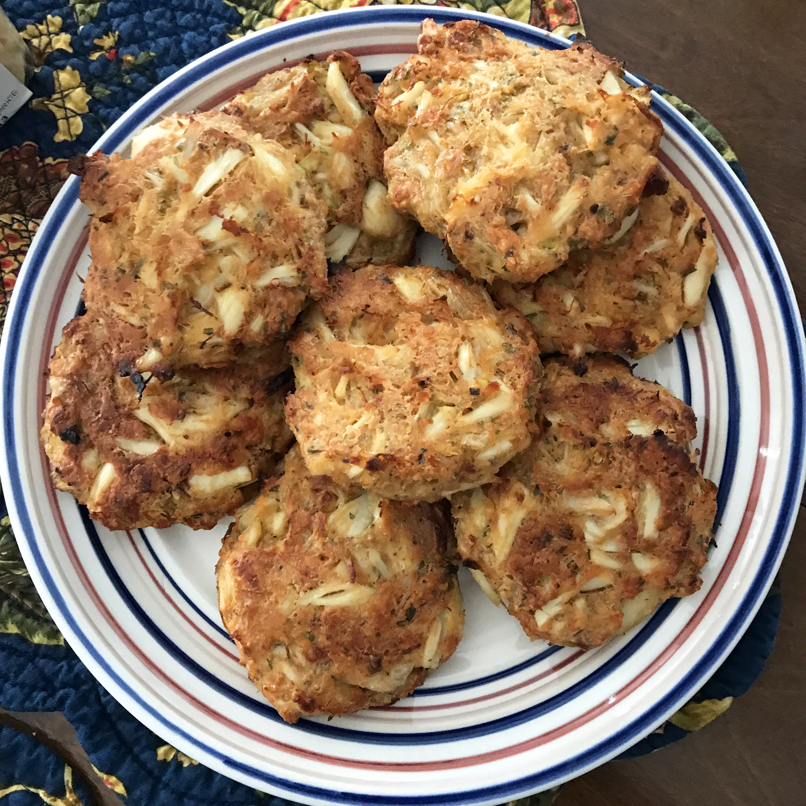

Classic Crab Cakes

Description
A sweet, salty, and savory dish best served fresh out of the kitchen. Made with crispy bread crumbs either baked or fried, a one bite treat you're sure to love.
Ingredients
- 1 egg
- 2 tablespoons mayonnaise
- 1 tablespoon minced green onions
- 4 teaspoons lemon juice
- 1 teaspoon dried tarragon
- 1/8 teaspoon red pepper flakes
- 8 ounces crab meat
- 1/2 cup crushed buttery round crackers
- 1 tablespoon butter
Process
- Whisk together egg, mayonnaise, green onions, lemon juice, tarragon, and pepper flakes in a medium bowl. Gently stir in crabmeat, being careful not to break up meat. Gradually mix in cracker crumbs, adding until desired consistency is achieved. Form crab mixture into 4 patties.
- Heat butter in a skillet over medium heat.
- Cook patties in the skillet until golden brown, 5 to 6 minutes on each side.
Return to homepage